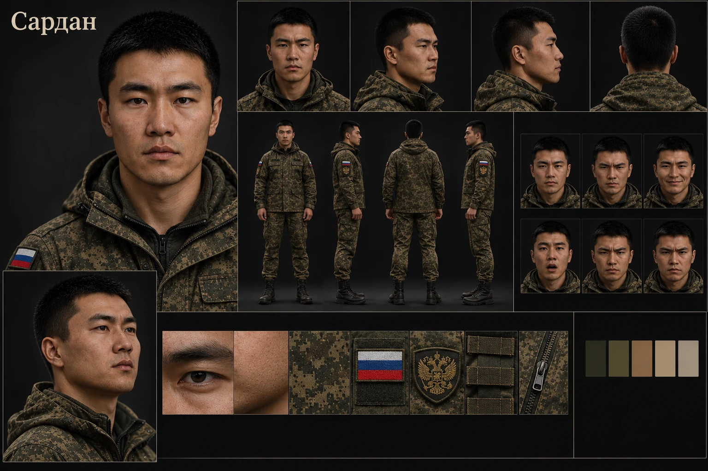

ОСНОВНА ІНФОРМАЦІЯ
Військовий, який хотів урятуватися
Сардан служить у військовій частині Північної держави. Після отримання браслета мислезв’язку він дізнався про можливість безпосереднього зв’язку з іншими його носіями. Разом із кількома товаришами вирішив перейти лінію фронту й здатися українським військовим.
ХАРАКТЕР І ВЧИНКИ
Балакучість, що обернулася небезпекою
Сардан любить розмовляти, ділитися новинами й вихвалятися тим, що знає більше за інших. Не втримавши таємницю, він розповів стороннім про браслет і підготовку втечі. Це призвело до викриття задуму.
РОЛЬ У ІСТОРІЇ
Спроба втечі та її наслідки
Його історія показує, як необережність однієї людини може поставити під загрозу інших учасників спільного плану.